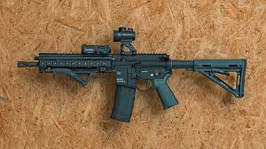
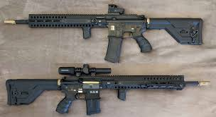

Allgemeiner Aufbau des Systems
Im folgenden Abschnitt wird der grundlegende Aufbau des HK416 technisch erklärt.
Das HK416 gehört zu den modernsten Sturmgewehren der heutigen Zeit und wurde speziell entwickelt, um technische Schwächen älterer Systeme zu verbessern. Besonders wichtig war dabei die Zuverlässigkeit unter extremen Bedingungen. Das Gewehr wurde so konstruiert, dass es sowohl bei sehr niedrigen Temperaturen als auch bei hohen Temperaturen zuverlässig funktioniert. Zusätzlich wurde darauf geachtet, dass das System auch bei Staub, Sand oder Schmutz stabil bleibt.
Der Aufbau des HK416 besteht aus zwei Hauptkomponenten. Das Oberteil enthält den Lauf, das Gassystem und die Zielvorrichtungen. Das Unterteil beinhaltet den Abzug, den Griff und das Magazin. Diese modulare Bauweise sorgt dafür, dass einzelne Teile sehr schnell ausgetauscht werden können. Dadurch ist das System besonders flexibel und kann leicht angepasst werden.
Ein weiterer wichtiger Punkt ist die Stabilität des Laufs. Der Lauf ist so konstruiert, dass er auch nach vielen Schüssen sehr präzise bleibt. Gleichzeitig sorgt das moderne Gassystem dafür, dass weniger Hitze in das Innere des Gewehrs gelangt. Das erhöht die Lebensdauer der wichtigsten Bauteile deutlich.


